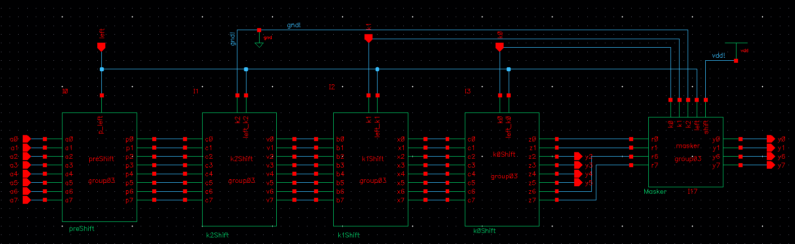
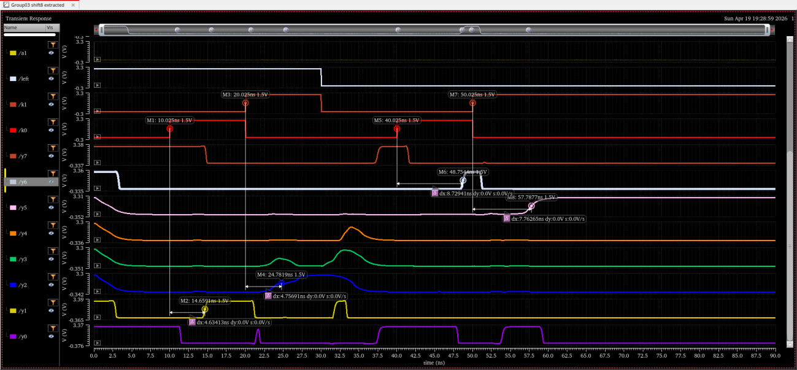
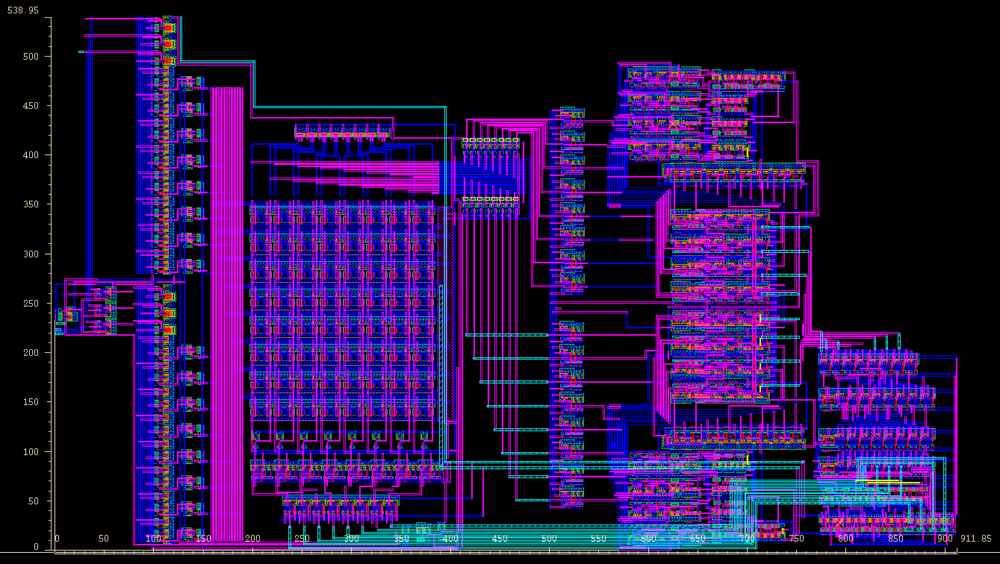
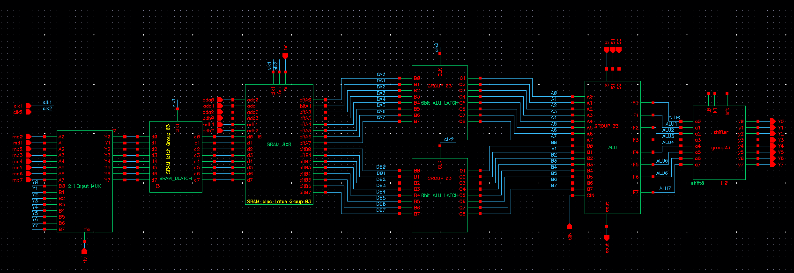
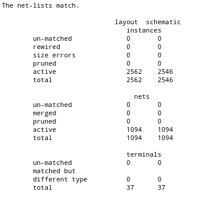

ECE 410 · Cadence Virtuoso
8-Bit CMOS Barrel Shifter
Designed and verified the shifter block for a team datapath.
Circuit design
I was able to design the shifter for our team’s 8-bit datapath. Staged multiplexer rows form a bidirectional rotation core, and output masking clears vacated bits for logical shifts.
Layout and verification
I created the layout in Cadence Virtuoso and checked it against its schematic with LVS and simulated the rotation core, checked one- and two-bit logical shifts with the masking circuitry in place. The shifter block passed LVS.



Team datapath integration
Our Spartan-8b design connects a two-read-port, one-write-port SRAM register file, an 8-bit ALU and the barrel shifter. The register file supplies operands, the ALU performs arithmetic and logic, and the shifter handles bit movement.
The team poster reports that the complete layout passed LVS. The individual blocks achieved their expected functionality during testing but full datapath functionality remained incomplete at the end of the project.


